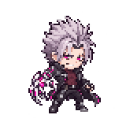
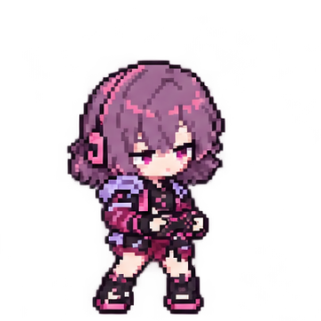

처음 애니메이션을 만들 때의 프롬프트와 니아의 승인된 도트 스타일로 다시 생성했습니다. 승인한 12프레임을 인게임 에키온 R에 적용했습니다. VF를 모아 폭주한 뒤 팔을 휘둘러 전방에 방출합니다.


원문 출처: Git 41ab261 · ArtSource/AnimationPrototypes/Subjects/echion/prompt.txt. 처음 생성한 뒤 셀 여백만 보완했습니다. 그림 생성은 내장 imagegen, 프레임 조립은 원본 픽셀 보존 방식입니다. 원작 공식 스킬 자료